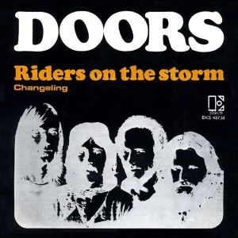

Day 4

The Doors - Riders on the Storm - 1971
之前提到的那个笑话，引用油管上的Fleuryette:
Went to Pére Lachaise in Paris to see Jim Morrison's grave last September, all of a sudden this Australian dude rocks up in full leather gear, blaring this song as loud as he possibly could, barging through the small crowd. Everybody, I mean EVERYBODY is staring at him, and he just shouts "What? It's appropriate!" I never laughed so hard in a cemetery. I still think of that guy sometimes.
Riders on the storm Riders on the storm Into this house we're born Into this world we're thrown Like a dog without a bone An actor out alone Riders on the storm There's a killer on the road His brain is squirmin' like a toad Take a long holiday Let your children play If ya give this man a ride Sweet memory will die Killer on the road, yeah Girl ya gotta love your man Girl ya gotta love your man Take him by the hand Make him understand The world on you depends Our life will never end Gotta love your man, yeah Riders on the storm Riders on the storm Into this house we're born Into this world we're thrown Like a dog without a bone An actor out alone Riders on the storm Riders on the storm Riders on the storm Riders on the storm Riders on the storm Riders on the storm